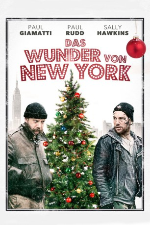
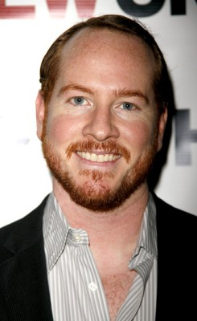
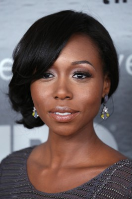

#5813 Das Wunder von New York
Alternativ: All Is Bright
 
 IMDB-Wertung: 5.6 / 10
IMDB-Wertung: 5.6 / 10  Metascore: 0
Metascore: 0 
Die Frankokanadier Rene (Paul Rudd) und Dennis (Paul Giamatti) haben in ihrem Leben noch nicht besonders viel auf die Beine gestellt. Das soll sich aber nun ändern, denn sie wittern das große Geld. Als Verkäufer von Weihnachtsbäumen wollen sie sich in New York City eine goldene Nase verdienen, doch das erweist sich schwieriger als zunächst angenommen.
Jahr: 2013
Dauer: 107 Minuten
FSK: 12
Land: USA Studio: Anchor Bay FilmsTonspuren: DTS - ,
Untertitel: Deutsch,
Auflösung: 1080p (1920x800) Größe: 8642 MB
Genre: Drama, Komödie, Weihnachten
Regisseur: Phil Morrison
Drehbuch: 18 Frames
Soundtrack:
Darsteller:
 Paul Giamatti als Dennis
Paul Giamatti als Dennis Paul Rudd als Rene
Paul Rudd als Rene Sally Hawkins als Olga
Sally Hawkins als Olga Amy Landecker als Therese
Amy Landecker als Therese- Michael Drayer als Bobby, who comes to buy a tree
 Colman Domingo als Nzomo
Colman Domingo als Nzomo- Halley Feiffer als Claire, from last year
- Nikki M. James als Betsy
- Curtiss Cook als Kevin
-  Darren Goldstein als Border Guard
 Peter Hermann als Monsieur Tremblay
Peter Hermann als Monsieur Tremblay- Morgan Spector als Vladimir
- Robert Keiley als Cop 2
- Desmin Borges als Diner Owner
- Gracie Lopez als Kid Who Takes a Tree
- Emory Cohen als Lou, who comes to buy a tree
- Duane Boutte als Man 1
- Liza Colón-Zayas als Mother of Six
- Vincent D'Arbouze als Prison Guard at the beginning
- Pamela Stewart als Tree Farm Owner
- Carla Brandberg als Woman 2
- Lucy Taylor als Woman from New Zealand
- Gregory Perri als Young Clerk
-  Amanda Warren als Young Woman
- Alexandra Fatovich als Woman #4
- Joe Remy Dolinsky als Club Kid , uncredited
- Elli als Rabbi Elli , uncredited
- Lola Freidenstine als School Girl , uncredited
- Julie Hays als Woman in Window , uncredited
- Richard Meiman als Christmas Tree Buyer #1 , uncredited
- Booch O'Connell als School Girl , uncredited
- Bonnie Rose als Homesec Woman , uncredited
- Barbara Vincent als Christmas Tree Customer , uncredited
- Tatyana Richaud als Michi
- Adam Phillips als Antoine
- Gordon Joseph Weiss als Blind Guy
- Rob Munk als Friendly Vermonteer
- Marcia Haufrecht als Bartender #1
- Janet Sarno als Bartender #2
- Colleen Werthmann als Cop 1
- Joseph Eric Berthiaume als Friend 1
- Joseph Cross als Friend 2
- Samuel Mercedes als Kid 1
- Steve Hurwitz als Man 2
- Linda Powell als Woman 1
- Shingo Nishimaru als Band Member #1
- Keita Nishimaru als Band Member #2
- Hiromu Yanagiya als Band Member #3
- Verna O'Hobson als Pawn Shop Owner
- Farley A. Wilson als Man #3
Datei: X:\2013(N-Z)\Wunder von New York, Das (2013, FSK12, 1920x800).mkv seit 23.03.2017
Festplatte: HD 2013(I-Z)-2014(A-Z)
 Es gibt insgesamt 133 Filme in der Gruppe '2013(N-Z)'
Es gibt insgesamt 133 Filme in der Gruppe '2013(N-Z)'